The FM-1 as a sampler of the mid-eighties, after the Emulator II and as dry as it was: a library of sixteen sounds, one or two on every note, through an 8-bit companded sample player into a 24 dB filter and a VCA, each with its ADSR, and one LFO. A grey panel, a two-line LCD, modules and their numbered functions.
2026-10-24
The buttons are the Emulator II's modules: GLO the MASTER, SCL the FILTER, ENV the LFO/VCA, EDIT the VOICE DEFINITION, SEQ the PRESET DEFINITION, REC the SEQUENCER, FX the effects, SAVE the DISK. Press a module again for its next function; KNOB 1–4 are the four sliders; the LCD says where you are.
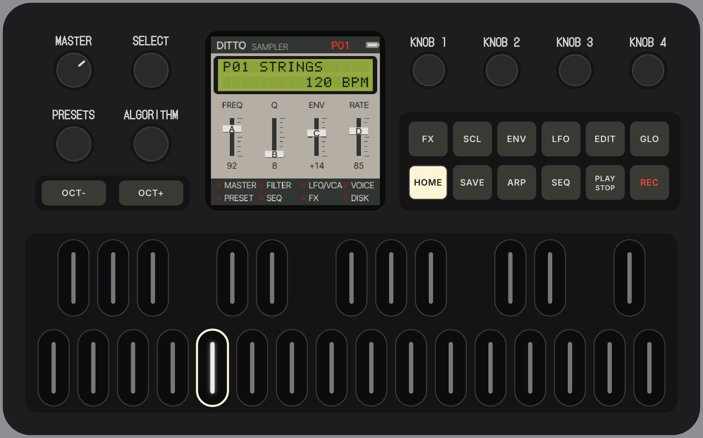
One sampler voice, the Emulator II's, with 32 presets.
Strings, a choir, an orchestra hit, piano, brass, flute, cellos, organ, harpsichord, marimba, tubular bells, pizzicato, double bass, timpani, a breathy recorder, harp: 41 zones from CC0 recordings. Three slots for your own samples.
PRESET DEF assigns SOUND B, as the Emulator II's presets did: stacked, VELOCITY SWITCH, VELOCITY CROSSFADE, a SPLIT or a POSITIONAL CROSSFADE over a range of keys.
EII: 8-bit μ-law and no interpolation, the grain of the Emulator II. Or CLEAN, the recordings as they are.
A 24 dB low-pass with its ADSR, a VCA with its ADSR, one LFO with a delay to the pitch, the filter and the level; velocity to the level and the filter. No patch bay: the routings are the EII's.
The notes start further into the sample, past its attack; a sustained sound loops while the key is held, or plays once through.
A two-line LCD in 5 × 7 dots, four sliders and the modules' LEDs: the functions numbered as on the instrument (FILTER 1, VOICE DEF 21, PRESET DEF 25).
An arpeggiator in PRESET DEF, as on the EII; a small 16-step sequencer with ties, accents and slides, its steps drawn on the LCD.
Only these two, as one would have patched them in 1984: a stereo delay in time with the tempo and a room, spring or hall reverb.
24 factory sounds (STRINGS, CHOIR, ORCH HIT, PIANO, SHAKUHACHI, BOW + PLUCK, BASS / PIANO, BRASS / HIT, CELLO>CHOIR…) and eight free slots. MIDI Program Change picks them.
Real screens of Ditto 1.0, taken from the emulator.
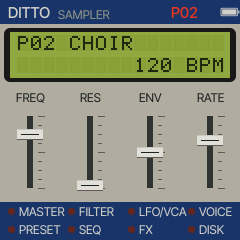
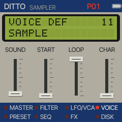
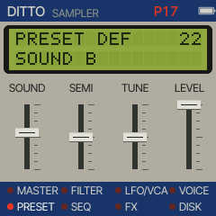
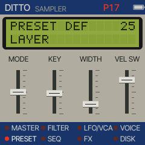
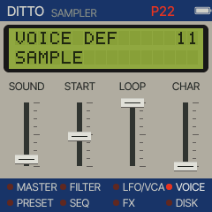
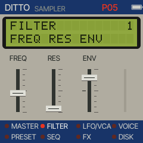
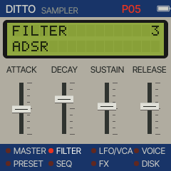
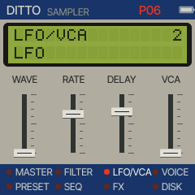
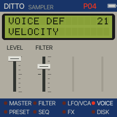
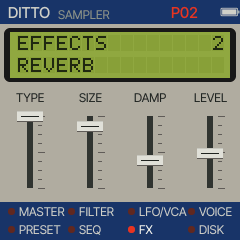
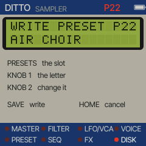
Custom firmware should never be a one-way door.
Chrome or Edge, a USB data cable, two minutes. The installer checks the package before writing and asks the FM-1 what it runs afterwards. An interrupted install resumes.
Hold OCT− while switching on (or let two starts fail) and the FM-1 starts a small rescue mode with only USB, ready for a new install. The boot code itself is never written.
The installer can put M-VAVE's official V15 firmware back at any time, after saving your music to a file.
Try it first in the browser, no FM-1 needed, or install it now.